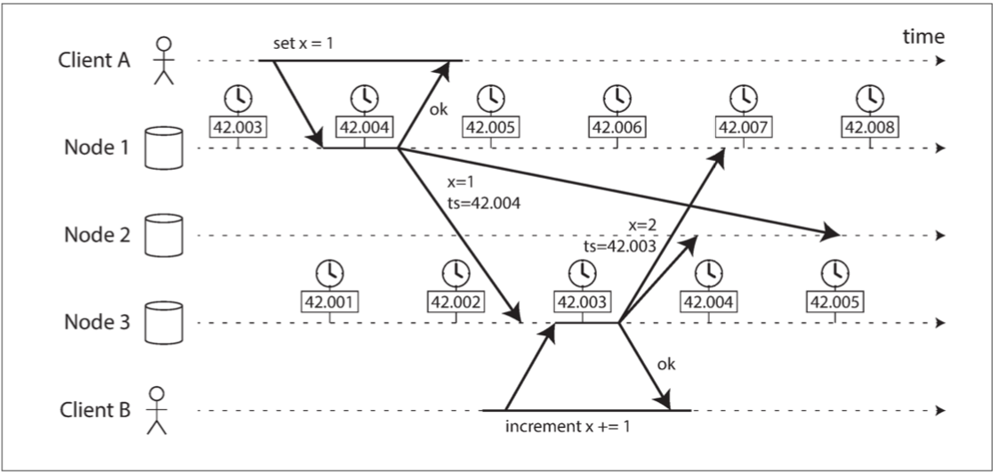
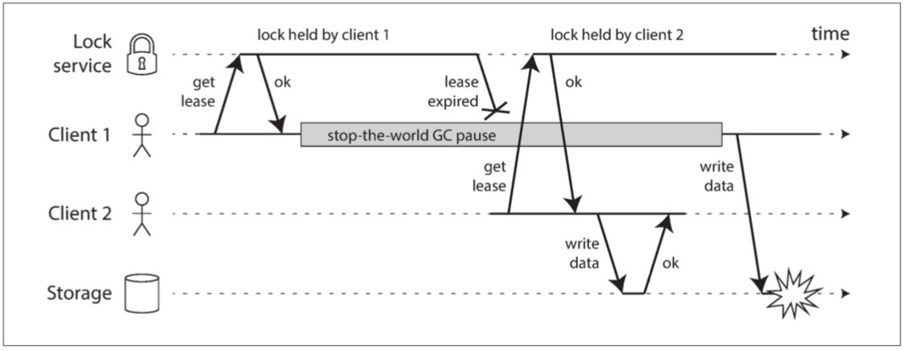

分布式系统的麻烦
能够在单台计算机上解决一个问题，那么分布式系统工程师通常会认为这个问题是平凡的\(^{[1]}\)，现在单个计算机确实可以做很多事情\(^{[2]}\)。但是容错和低延迟是不能用单个节点实现的。
使用分布式系统与在一台计算机上编写软件有着根本的区别，主要的区别在于，有许多新颖和刺激的方法可以使事情出错\(^{[3,4]}\)。
本章对分布式系统中可能出现的问题进行彻底的悲观和沮丧的总结。我们将研究网络的问题（“不可靠的网络”）; 时钟和时序问题（“不可靠的时钟”）。
分布式系统中可能发生的各种问题，包括：
- 网络消息的不确定性：数据包可能会丢失或任意延迟，同样答复可能会丢失或延迟，不清楚是否发送成功；
- 节点时钟的不同步：节点的时钟可能会与其他节点显著不同步（尽管你尽最大努力设置 NTP），它可能会突然跳转或跳回；
- 进程的暂停：一个进程可能会在其执行的任何时候暂停一段相当长的时间（可能是因为停止所有处理的垃圾收集器），被其他节点宣告死亡，然后再次复活，却没有意识到它被暂停
这类 部分失效（partial failure） 可能发生的事实是分布式系统的决定性特征。
试图在软件中建立 部分失效 的容错机制，这样整个系统在即使某些组成部分被破坏的情况下，也可以继续运行。
- 检测：大多数没有检测节点是否故障的准确机制，分布式算法依靠超超时来确定远程节点是否可用；
- 超时无法却分网络失效和节点失效，并且可变的网络延迟有时会导致节点被错误地怀疑发生故障
- 容忍：节点甚至不能就现在是什么时间达成一致
- 需要一个能从其他节点获得帮助的协议，并争取达到法定人数以达成一致。
网络、时钟和进程的不可靠性是否是不可避免的自然规律
- 可能给网络提供硬实时的响应保证和有限的延迟，但是这样做非常昂贵，且导致硬件资源的利用率降低。
- 大多数非安全关键系统会选择 便宜而不可靠，而不是 昂贵和可靠。
超级计算机采用可靠的组件，因此当组件发生故障时必须完全停止并重新启动。
分布式系统可以永久运行而不会在服务层面中断，因为所有的错误和维护都可以在节点级别进行处理 —— 至少在理论上是如此。
故障与部分失效
单个计算机上的软件没有根本性的不可靠原因：
- 硬件正常工作时，相同的操作总是产生相同的结果（这是确定性的）
- 存在硬件问题（例如，内存损坏或连接器松动），其后果通常是整个系统故障（例如，内核恐慌，“蓝屏死机”，启动失败）
从第一台数字计算机开始，始终正确地计算 这个设计目标贯穿始终\(^{[5]}\)。
- 计算机设计中的一个有意的选择：如果发生内部错误，我们宁愿电脑完全崩溃，而不是返回错误的结果
而在现实世界中，各种各样的事情都可能会出现问题\(^{[6]}\)。
部分失效（partial failure）：分布式系统中，系统的某些部分可能会以某种不可预知的方式被破坏。
- 部分失效是 不确定性的（nondeterministic）
- 任何涉及多个节点和网络的事情，它有时可能会工作，有时会出现不可预知的失败；甚至不知道是否成功，网络传播时间也是不确定的；
这种不确定性和部分失效的可能性，使得分布式系统难以工作\(^{[7]}\)。
云计算与超级计算机
如何构建大型计算系统有一系列的哲学：
- 一个极端是高性能计算（HPC）领域：通常用于计算密集型科学计算任务，如天气预报或分子动力学（模拟原子和分子的运动）
- 另一个极端是 云计算（cloud computing）\(^{[8]}\)：通常与多租户数据中心，以太网连接的商用计算机，弹性 / 按需资源分配以及计量计费等相关联；
不同的哲学会导致不同的故障处理方式：
- 超级计算机：通过让部分失败升级为完全失败来处理部分失败
- 作业通常会不时地将计算的状态存盘到持久存储中，单个节点故障后，重新启动工作负载从上一个检查点开始\(^{[9,10]}\)；
- 超级计算机更像是一个单节点计算机而不是分布式系统
本书的重点放在实现互联网服务的系统上，与超级计算机看起来有很大不同：
- 可用性：互联网服务要求低延迟，服务不可用（如停止集群进行修复）是不可接受；像天气模拟这样离线（批处理）工作可以重新启动；
- 硬件：超级计算机由专用硬件构成，节点相当可靠，节点间通过共享内存和远程直接内存访问进行通信；云服务是商用机器构建而成，以较低程本提供相同性能，且具有较高的故障率；
- 网络：超级计算机通常使用专门的网络拓扑结构（如多维网格和Torus网络\(^{[12]}\)）；互联网通常基于IP和以太网，以 CLOS 拓扑排列，提供更高的对分（bisection）带宽\(^{[11]}\)；
- 位置：超级计算机通常假设所有节点都在一起，而互联网可以是地理位置分散部署，与本地网络相比，通信速度缓慢且不可靠；
- 故障处理：成千上万的节点的系统中，可以认为总会有一些东西是坏掉的\(^{[9]}\)。如果错误处理策略只是简单放弃组成时，一个大的系统最终会花费大量时间从错误中恢复，而不是做有用的工作\(^{[10]}\)。
从不可靠的组件构建可靠的系统
直观地看来，系统只能像其最不可靠的组件（最薄弱的环节）一样可靠。但事实上，从不太可靠的潜在基础构建更可靠的系统是计算机领域的一个古老思想\(^{[13]}\)：
纠错码允许数字数据在通信信道上准确传输，偶尔会出现一些错误，例如由于无线网络上的无线电干扰\(^{[14]}\)
互联网协议（Internet Protocol, IP） 不可靠：可能丢弃、延迟、重复或重排数据包。传输控制协议（Transmission Control Protocol, TCP）在互联网协议（IP）之上提供了更可靠的传输层。
虽然这个系统可以比它的底层部分更可靠，但它的可靠性总是有限的。
- 纠错码可以处理少量的单比特错误，但是如果你的信号被干扰所淹没，那么通过信道可以得到多少数据，是有根本性的限制的\(^{[15]}\)
- TCP 可以隐藏数据包的丢失，重复和重新排序，但是它不能神奇地消除网络中的延迟。
虽然更可靠的高级系统并不完美，但它仍然有用，因为它处理了一些棘手的低级错误，所以其余的错误通常更容易推理和处理。我们将在 “数据库的端到端原则” 中进一步探讨这个问题。
不可靠的网络
本书中关注的分布式系统是无共享的系统，即通过网络连接的一堆机器。
互联网和数据中心（通常是以太网）中的大多数内部网络都是 异步分组网络（asynchronous packet networks）
- 一个节点可以向另一个节点发送一个消息（一个数据包），但是网络不能保证它什么时候到达，或者是否到达
- 发送请求并期待响应，则很多事情可能会出错（其中一些如 图 8-1 所示）：
- 请求可能已经丢失（可能有人拔掉了网线）。
- 请求可能正在排队，稍后将交付（也许网络或接收方过载）。
- 远程节点可能已经失效（可能是崩溃或关机）。
- 远程节点可能暂时停止了响应（可能会遇到长时间的垃圾回收暂停；请参阅 “进程暂停”），但稍后会再次响应。
- 远程节点可能已经处理了请求，但是网络上的响应已经丢失（可能是网络交换机配置错误）。
- 远程节点可能已经处理了请求，但是响应已经被延迟，并且稍后将被传递（可能是网络或者你自己的机器过载）。
{kind=link}
图 8-1 如果发送请求并没有得到响应，则无法区分（a）请求是否丢失，（b）远程节点是否关闭，或（c）响应是否丢失。

发送者不能分辨数据包是否被发送，不能确认接收者是否已经处理：
- 处理这个问题的通常方法是 超时（Timeout）：在一段时间之后放弃等待，并且认为响应不会到达。
- 导致：消息被发送多次，或者被处理多次；
真实世界的网络故障
有人可能希望现在我们已经找出了使网络变得可靠的方法。但是现在似乎还没有成功。
即使在像一家公司运营的数据中心那样的受控环境中，网络问题也可能出乎意料地普遍：
- 每个月大约有 12 个网络故障，其中一半断开一台机器，一半断开整个机架\(^{[16]}\)
- 添加冗余网络设备不会减少故障，不能防范人为错误（例如，错误配置的交换机，中断的主要原因）\(^{[17]}\)
网络分区
当网络的一部分由于网络故障而被切断时，有时称为 网络分区（network partition） 或 网络断裂（netsplit）。在本书中使用更一般的术语 网络故障（network fault），以避免与 第六章 讨论的存储系统的分区（分片）相混淆。
软件需要能够处理网络故障：
- 如果网络故障的错误处理没有定义与测试，各种错误可能都会发生，如删除所有数据\(^{[18]}\)；
处理网络故障并不意味着容忍它们：
- 当你的网络遇到问题时，简单地向用户显示一条错误信息；
- 需要知道你的软件如何应对网络问题，并确保系统能够从中恢复；
- 有意识地触发网络问题并测试系统响应
检测故障
许多系统需要自动检测故障节点，例如：
- 负载平衡器需要停止向已死亡的节点转发请求（从轮询列表移出，即 out of rotation）；
- 在单主复制功能的分布式数据库中，如果主库失效，则需要将从库之一升级为新主库；
网络的不确定性使得很难判断一个节点是否工作，在某些特定的情况下，可能会收到一些反馈信息，明确告诉你某些事情没有成功：
- 如果没有进程正在侦听目标端口，操作系统将通过发送 FIN 或 RST 来关闭并重用 TCP 连接。但是，如果节点在处理请求时发生崩溃，则无法知道远程节点实际处理了多少数据\(^{[19]}\)。
- 如果进程崩溃，但节点仍运行，脚本可以通知其他节点以便快速接管，无需等待超时到期，如 HBase\(^{[20]}\)。
- 通过数据中心网络交换机的管理界面检测硬件级别的链路故障（例如，远程机器是否关闭电源）。
即使 TCP 确认已经传送了一个数据包，应用程序在处理之前可能已经崩溃。如果你想确保一个请求是成功的，你需要应用程序本身的正确响应\(^{[21]}\)。
超时与无穷的延迟
超时应该等待多久？不幸的是没有简单的答案
- 长时间的超时意味着长时间等待，直到一个节点被宣告死亡，用户可能不得不等待，或者看到错误信息；
- 短的超时可以更快地检测到故障，但有更高地风险误将一个节点宣布为失效；
- 动作可能会最终执行两次，节点实际上是活着的，并且正在执行一些动作；
- 级联失效：节点由于过载导致其响应缓慢
网络拥塞和排队
计算机网络上数据包延迟的可变性通常是由于排队\(^{[22]}\)：
- 网络交换机排队：多个不同的节点同时尝试将数据包发送到同一目的地
- 网络交换机必须将它们排队并将它们逐个送入目标网络链路，如下图
- 如果传入的数据太多，交换机队列填满，数据包将被丢弃，需要重新发送数据包 - 即使网络良好。
- 操作系统排队：目标机器所有 CPU 内核当前都处于繁忙状态，这可能需要一段任意的时间
- 虚拟机监视器 \(^{[23]}\)排队（缓冲）：在虚拟化环境中，正在运行的操作系统经常暂停几十毫秒，因为另一个虚拟机正在使用 CPU 内核。在这段时间内，虚拟机不能从网络中消耗任何数据
- TCP 执行 流量控制：节点会限制自己的发送速率以避免网络链路或接收节点过载\(^{[24]}\)
如果有多台机器将网络流量发送到同一目的地，则其交换机队列可能会被填满。在这里，端口 1,2 和 4 都试图发送数据包到端口 3

TCP与UDP
一些对延迟敏感的应用程序，比如视频会议和 IP 语音（VoIP），使用了 UDP 而不是 TCP。
- UDP 不执行流量控制并且不重传丢失的分组，所以避免了网络延迟变化的一些原因（尽管它仍然易受切换队列和调度延迟的影响）
- 在延迟数据毫无价值的情况下，UDP 是一个不错的选择。重试发生在人类层。
在公共云和多租户数据中心中，资源被许多客户共享：网络链接和交换机，甚至每个机器的网卡和 CPU（在虚拟机上运行时）：
- 如果附近的某个人（嘈杂的邻居）正在使用大量资源，则网络延迟可能会发生剧烈变化\(^{[25,26]}\)；
- 系统连续测量响应时间及其变化（抖动），并根据观察到的响应时间分布自动调整超时时间，如Phi Accrual 故障检测器\(^{[27]}\)；
同步网络与异步网络
为什么我们不能在硬件层面上解决这个问题（最大延迟固定 的数据包），使网络可靠，使软件不必担心呢
- 将数据中心网络与非常可靠的传统固定电话网络（非蜂窝，非 VoIP）进行比较。
通过电话网络拨打电话时，它会建立一个电路：
- 在两个呼叫者之间的整个路线上为呼叫分配一个固定的，有保证的带宽量，保持至通话结束\(^{[28]}\)；
- 例如，ISDN 网络以每秒 4000 帧的固定速率运行。呼叫建立时，每个帧内（每个方向）分配 16 位空间，每一方都保证能够每 250 微秒发送一个精确的 16 位音频数据\(^{[29,30]}\)。
- 网络是同步的：即使数据经过多个路由器，也不会受到排队的影响，因为呼叫的 16 位空间已经在网络的下一跳中保留了下来。而且由于没有排队，网络的最大端到端延迟是固定的（有限延迟（bounded delay）)。
电路是固定数量的预留带宽，在电路建立时没有其他人可以使用，而 TCP 连接的数据包 机会性地 使用任何可用的网络带宽。
以太网和 IP 是 分组交换协议，不得不忍受排队的折磨和因此导致的网络无限延迟，这些协议没有电路的概念。
- 针对 突发流量（bursty traffic） 进行了优化，一个电路适用于音频或视频通话，在通话期间需要每秒传送相当数量的比特，而请求网页/传输文件没有特定的带宽要求；
- TCP 动态调整数据传输速率以适应可用的网络容量。电路用于突发数据传输会浪费网络容量，并且使传输不必要地缓慢。
尝试去建立同时支持电路交换和分组交换的混合网络，比如 ATM
- InfiniBand 有一些相似之处\(^{[31]}\)：它在链路层实现了端到端的流量控制，从而减少了在网络中排队的需要，尽管它仍然可能因链路拥塞而受到延迟\(^{[32]}\)；
- 使用 服务质量（quality of service，即 QoS，数据包的优先级和调度）和 准入控制（admission control，限速发送器），可以在分组网络上模拟电路交换，或提供统计上的 有限延迟\(^{[22, 28]}\)
目前在多租户数据中心和公共云或通过互联网进行通信时，此类服务质量尚未启用。当前部署的技术不允许我们对网络的延迟或可靠性作出任何保证：我们必须假设网络拥塞，排队和无限的延迟总是会发生。
网络中的可变延迟不是一种自然规律，而只是成本 / 收益权衡的结果。
不可靠的时钟
在分布式系统中，时间是一件棘手的事情，因为通信不是即时的：
- 收到消息的时间总是晚于发送的时间，但是由于网络中的可变延迟，我们不知道晚了多少时间；
- 导致有时很难确定在涉及多台机器时发生事情的顺序。
网络时间协议（NTP）：允许根据一组服务器报告的时间来调整计算机时钟\(^{[32]}\)。服务器则从更精确的时间源（如 GPS 接收机）获取时间。
单调钟与日历时钟
日历时钟（time-of-day clock）：根据某个日历（也称为 挂钟时间，即 wall-clock time）返回当前日期和时间。
- 如 Linux 上的
clock_gettime(CLOCK_REALTIME)和 Java 中的System.currentTimeMillis() - 通常与 NTP 同步，但可能会出现跳跃和忽略闰秒，使日历时钟不能用于测量经过时间（elapsed time）\(^{[33]}\)。
单调钟（monotonic clock）：适用于测量持续时间（时间间隔），绝对值是毫无意义
- 如Linux 上的
clock_gettime(CLOCK_MONOTONIC)，和 Java 中的System.nanoTime()； - 多CPU时每个 CPU 可能有一个单独的计时器，但不一定与其他 CPU 同步，明智的做法是不要太把这种单调性保证当回事\(^{[34]}\)。
NTP 协议检测到计算机的本地石英钟比 NTP 服务器要更快或更慢，则可以调整单调钟向前走的频率（这称为 偏移（skewing） 时钟），速率增加或减慢最高至 0.05%。
时钟同步与准确性
日历时钟需要根据 NTP 服务器或其他外部时间源来设置才能有用，但硬件时钟和 NTP 可能会变幻莫测：
- 计算机中的石英钟不够精确：它会 漂移（drifts，即运行速度快于或慢于预期）。
- 如果计算机的时钟与 NTP 服务器的时钟差别太大，可能会拒绝同步，或者本地时钟将被强制重置\(^{[32]}\)。
- NTP 同步只能和网络延迟一样好，所以当你在拥有可变数据包延迟的拥塞网络上时，NTP 同步的准确性会受到限制。
- 闰秒导致一分钟可能有 59 秒或 61 秒，未考虑到会导致系统崩溃\(^{[33,36,37]}\)。NTP服务器处理闰秒最佳方案是通过在一天中逐渐执行闰秒调整（这被称为 拖尾，即 smearing）。
- 当一个 CPU 核心在虚拟机之间共享时，每个虚拟机都会暂停几十毫秒，与此同时另一个虚拟机正在运行。从应用程序的角度来看，这种停顿表现为时钟突然向前跳跃。
- 没有完整控制权的设备（例如，移动设备或嵌入式设备）上运行软件，则可能完全不能信任该设备的硬件时钟。
通过 GPS 接收机，精确时间协议（PTP）\(^{[38]}\)以及仔细的部署和监测可以实现在 UTC 时间 100 微秒内同步时钟。
依赖同步时钟
日历时钟 可能会前后跳跃，而一个节点上的时间可能与另一个节点上的时间完全不同。
- 使用需要同步时钟的软件，必须仔细监控所有机器之间的时钟偏移。时钟偏离其他时钟太远的节点应当被宣告死亡，并从集群中移除。
有序事件的时间戳
如果两个客户端写入分布式数据库，谁先到达？
下图显示具有多主复制的数据库中对时钟的危险使用（当写入被复制到其他节点时，根据发生写入的节点上的日历时钟标记一个时间戳）
- 客户端 A 在节点 1 上写入
x = 1；写入被复制到节点 3； - 客户端 B 在节点 3 上增加 x（我们现在有
x = 2）； - 最后这两个写入都被复制到节点 2。
客户端 B 的写入比客户端 A 的写入要晚，但是 B 的写入具有较早的时间戳。

在这个例子中，时钟同步是非常好的：节点 1 和节点 3 之间的偏差小于 3ms，这可能比你在实践中能预期的更好。
时间戳却无法正确排列事件：
- 写入
x = 1的时间戳为 42.004 秒，但写入x = 2的时间戳为 42.003 秒 - 当节点 2 接收到这两个事件时，会错误地推断出
x = 1是最近的值，而丢弃写入x = 2。
这种冲突解决策略被称为 最后写入胜利（LWW），但是“最近” 的定义不能基于本地的日历时钟；
- 逻辑时钟（logic clock）\(^{[39,40]}\)是基于递增计数器而不是振荡石英晶体，对于排序事件来说是更安全的选择；仅测量事件的相对顺序（无论一个事件发生在另一个事件之前还是之后）
时钟读数存在置信区间
使用公共互联网上的 NTP 服务器，最好的准确度可能达到几十毫秒，而且当网络拥塞时，误差可能会超过 100 毫秒\(^{[40]}\)。
将时钟读数视为一个时间点是没有意义的 —— 它更像是一段时间范围：
- 一个系统可能以 95% 的置信度认为当前时间处于本分钟内的第 10.3 秒和 10.5 秒之间，它可能没法比这更精确了\(^{[41]}\)
大多数系统不公开这种不确定性：
- 当调用
clock_gettime()时，返回值不会告诉你时间戳的预期错误； - 例外是 Spanner 中的 Google TrueTime API \(^{[35]}\)，它明确地报告了本地时钟的置信区间[最早，最晚]。
全局快照的同步时钟
对分布式事务语义使用时钟同步是一个活跃的研究领域\(^{[40,44,45]}\)，但是它们还没有在谷歌之外的主流数据库中实现。
快照隔离最常见的实现需要单调递增的事务 ID。如果写入比快照晚（即，写入具有比快照更大的事务 ID），则该写入对于快照事务是不可见的。
- 单节点数据库上，一个简单的计数器就足以生成事务 ID
- 分布式数据库，（跨所有分区）全局单调递增的事务 ID 会很难生成
事务 ID 必须反映因果关系：如果事务 B 读取由事务 A 写入的值，则 B 必须具有比 A 更大的事务 ID，否则快照就无法保持一致。在有大量的小规模、高频率的事务情景下，在分布式系统中创建事务 ID 成为一个难以处理的瓶颈。
使用同步时钟的时间戳作为事务 ID？问题在于时钟精度的不确定性
- Spanner以这种方式实现跨数据中心的快照隔离\(^{[42,43]}\)。
- 两个置信区间不重叠\(A_{earliest} <A_{latest} <B_{earliest} <B_{latest}\)，B 肯定发生在 A 之后。
- 在提交读写事务之前，Spanner 在提交读写事务时，会故意等待置信区间长度的时间。
- 尽可能短的等待时间：Google 在每个数据中心都部署 GPS 接收器或原子钟，时钟同步到大约 7 毫秒以内。
进程暂停
分布式系统中使用危险时钟的另一个例子：
- 一个数据库，每个分区只有一个领导者。只有领导被允许接受写入。一个节点如何知道它仍然是领导者（它并没有被别人宣告为死亡），并且它可以安全地接受写入？
一种选择是领导者从其他节点获得一个 租约（lease），类似一个带超时的锁\(^{[46]}\)。任一时刻只有一个节点可以持有租约，节点必须周期性地在租约过期前续期。
代码类似如下：
while (true) {
request = getIncomingRequest();
// 确保租约还剩下至少 10 秒
if (lease.expiryTimeMillis - System.currentTimeMillis() < 10000){
lease = lease.renew();
}
if (lease.isValid()) { // GC Pause
process(request);
}
}
存在的问题：
- 依赖于同步时钟：租约到期时间由另一台机器设置（例如，当前时间加上 30 秒，计算到期时间），并将其与本地系统时钟进行比较。如果时钟不同步超过几秒，则会存在问题；
即使将协议更改为仅使用本地单调时钟，也存在另一个问题：
- 程序执行中出现了意外的停顿，如线程在
lease.isValid()行周围停止 15 秒，然后才继续。
一个线程可能会暂停很长时间，发生的原因有很多种：
- 垃圾收集器（GC）的 stop-the-world，如 Java 虚拟机，可以通过改变分配模式或调整 GC 策略来减少暂停。
- 虚拟化环境中，可以 挂起（suspend） 虚拟机（暂停执行所有进程并将内存内容保存到磁盘）并恢复（恢复内存内容并继续执行）。
- 在最终用户的设备（如笔记本电脑）上，执行也可能被暂停并随意恢复，如关闭电脑盖子休眠时。
- 在虚拟机的情况下，在其他虚拟机中花费的 CPU 时间被称为 窃取时间（steal time）。当管理程序切换到另一个虚拟机时（在虚拟机中运行时），当前正在运行的线程可能在代码中的任意点处暂停。
- 应用程序执行同步磁盘访问，则线程可能暂停，等待缓慢的磁盘 I/O 操作完成\(^{[48]}\)。I/O 暂停和 GC 暂停甚至可能合谋组合它们的延迟\(^{[49]}\)。
- 操作系统配置为允许交换到磁盘（页面交换），则简单的内存访问可能导致 页面错误（page fault），要求将磁盘中的页面装入内存。当这个缓慢的 I/O 操作发生时，线程暂停。如果内存压力很高，则可能需要将另一个页面换出到磁盘。在极端情况下，操作系统可能花费大部分时间将页面交换到内存中，而实际上完成的工作很少（这被称为 抖动，即 thrashing）。
- 发送
SIGSTOP信号来暂停 Unix 进程，例如通过在 shell 中按下 Ctrl-Z。这个信号立即阻止进程继续执行更多的 CPU 周期，直到SIGCONT恢复为止，此时它将继续运行。
所有这些事件都可以随时 抢占（preempt） 正在运行的线程，并在稍后的时间恢复运行，而线程甚至不会注意到这一点。
分布式系统中的节点，必须假定其执行可能在任意时刻暂停相当长的时间，即使是在一个函数的中间。
响应时间保证
硬实时（hard real-time） 系统：软件必须有一个特定的 截止时间（deadline），如果截止时间不满足，可能会导致整个系统的故障。需要各级软件栈的支持：
- 一个实时操作系统（RTOS）：在指定的时间间隔内保证 CPU 时间的分配
- 动态内存分配可能受到限制或完全不允许（实时垃圾收集器存在，但是应用程序仍然必须确保它不会给 GC 太多的负担）
实时系统可能具有较低的吞吐量，因为他们必须让及时响应的优先级高于一切。
- 限制了可以使用的编程语言、库和工具的范围，开发实时系统非常昂贵，通常用于安全关键的嵌入式设备。
对于大多数服务器端数据处理系统来说，实时保证是不经济或不合适的。因此，这些系统必须承受在非实时环境中运行的暂停和时钟不稳定性。
限制垃圾收集的影响
语言运行时在计划垃圾回收时具有一定的灵活性，因为它们可以跟踪对象分配的速度和随着时间的推移剩余的空闲内存。
- 将 GC 暂停视为一个节点的短暂计划中断，并在这个节点收集其垃圾的同时，让其他节点处理来自客户端的请求\(^{[50,51,52]}\)。
- 只用垃圾收集器来处理短命对象（这些对象可以快速收集），并定期在积累大量长寿对象（因此需要完整 GC）之前重新启动进程\(^{[47,53]}\)。
知识、真相与谎言
在分布式系统中，我们可以陈述关于行为（系统模型）的假设，并以满足这些假设的方式设计实际系统。算法可以被证明在某个系统模型中正确运行。这意味着即使底层系统模型提供了很少的保证，也可以实现可靠的行为。
真相由多数所定义
分布式系统不能完全依赖单个节点，因为节点可能随时失效，可能会使系统卡死，无法恢复。
- 分布式算法都依赖于法定人数，决策需要来自多个节点的最小投票数，以减少对于某个特定节点的依赖。
最常见的法定人数是超过一半的绝对多数（尽管其他类型的法定人数也是可能的）。
- 多数法定人数允许系统继续工作，如果单个节点发生故障（三个节点可以容忍单节点故障；五个节点可以容忍双节点故障）。
领导者和锁
通常情况下，一些东西在一个系统中只能有一个。例如：
- 数据库分区的领导者只能有一个节点，以避免 脑裂（即 split brain）。
- 特定资源的锁或对象只允许一个事务 / 客户端持有，以防同时写入和损坏。
- 一个特定的用户名只能被一个用户所注册，因为用户名必须唯一标识一个用户。
即使一个节点认为它是 “天选者（the choosen one）”（分区的负责人，锁的持有者，成功获取用户名的用户的请求处理程序），但这并不一定意味着有法定人数的节点同意！
- 一个节点可能以前是领导者，但是如果其他节点在此期间宣布它死亡（例如，由于网络中断或 GC 暂停），则它可能已被降级，且另一个领导者可能已经当选。
下图是由于不正确的锁实现导致的数据损坏错误。
- 一个存储服务中的文件一次只能被一个客户访问，要求客户端从锁定服务获取租约来实现。

防护令牌
防护（fencing）：确保一个被误认为自己是 “天选者” 的节点不能扰乱系统的其它部分。
- 假设每次锁定服务器授予锁或租约时，它还会返回一个 防护令牌（fencing token），且数字每次授予锁定时都会增加（如由锁定服务增加）；
- 要求客户端每次向存储服务发送写入请求时，都必须包含当前的防护令牌；
- 服务器发现客户端发送的 token 过时，会拒绝写入请求；

如果将 ZooKeeper 用作锁定服务，则可将事务标识 zxid 或节点版本 cversion 用作防护令牌。由于它们保证单调递增，因此它们具有所需的属性\(^{[54]}\)。
- zookeeper 通过临时节点实现的锁，还需要防护令牌么？
在服务器端检查一个令牌可能看起来像是一个缺点，但这可以说是一件好事：一个服务假定它的客户总是守规矩并不明智，因为使用客户端的人与运行服务的人优先级非常不一样\(^{[55]}\)。
拜占庭故障
拜占庭故障（Byzantine fault）：存在节点可能 “撒谎”（发送任意错误或损坏的响应）。
在不信任的环境中达成共识的问题被称为拜占庭将军问题\(^{[56]}\)。
当一个系统在部分节点发生故障、不遵守协议、甚至恶意攻击、扰乱网络时仍然能继续正确工作，称之为 拜占庭容错（Byzantine fault-tolerant），在某些特定情况下是有意义的：
- 航空航天环境中，计算机内存或 CPU 寄存器中的数据可能被辐射破坏，飞行控制系统必须容忍拜占庭故障\(^{[57,58]}\)。
- 在多个参与组织的系统中，一些参与者可能会试图欺骗或诈骗他人。如像比特币和其他区块链一样的对等网络。
制作拜占庭容错系统的协议相当复杂\(^{[59]}\)，而容错嵌入式系统依赖于硬件层面的支持\(^{[57]}\)。在大多数服务器端数据系统中，部署拜占庭容错解决方案的成本使其变得不切实际。
- 大多数拜占庭式容错算法要求超过三分之二的节点能够正常工作（即，如果有四个节点，最多只能有一个故障）。
Web 应用程序确实需要预期受终端用户控制的客户端（如 Web 浏览器）的任意和恶意行为
- 通常不在这里使用拜占庭容错协议，而只是让服务器有权决定是否允许客户端行为。
弱谎言形式
尽管我们假设节点通常是诚实的，但值得向软件中添加防止 “撒谎” 弱形式的机制：
- 网络数据包有时会受到损坏：逃脱内建于 TCP 和 UDP 中的校验和检测\(^{[60,61,62]}\)，但应用程序级协议中的校验和可以防止；
- 用户的任何输入校验：可公开访问的应用程序必须仔细清理来自用户的任何输入
系统模型与现实
关于时序假设，三种系统模型是常用的：
- 同步模型：假设网络延迟、进程暂停和和时钟误差都是受限的
- 并不是大多数实际系统的现实模型，因为无限延迟和暂停确实会发生。
- 部分同步模型：一个系统在大多数情况下像一个同步系统一样运行，但有时候会超出网络延迟，进程暂停和时钟漂移的界限\(^{[63]}\)
- 很多系统的现实模型，大多数情况网络和进程表现良好。
- 异步模型：算法不允许对时序做任何假设
- 事实上它甚至没有时钟（所以它不能使用超时）。一些算法被设计为可用于异步模型，但非常受限。
除了时序问题，我们还要考虑 节点失效。三种最常见的节点系统模型是：
- 崩溃 - 停止故障：算法可能会假设一个节点只能以一种方式失效，即通过崩溃
- 意味着节点可能在任意时刻突然停止响应，此后该节点永远消失 —— 它永远不会回来。
- 崩溃 - 恢复故障：假设节点可能会在任何时候崩溃，但也许会在未知的时间之后再次开始响应。
- 假设节点具有稳定的存储（即非易失性磁盘存储）且会在崩溃中保留，而内存中的状态会丢失。
- 拜占庭（任意）故障：节点可以做（绝对意义上的）任何事情，包括试图戏弄和欺骗其他节点
对于真实系统的建模，具有崩溃 - 恢复故障（crash-recovery） 的 部分同步模型（partial synchronous）通常是最有用的模型。
算法的正确性
写下想要的分布式算法的属性来定义它的正确含义。例如，如果我们正在为一个锁生成防护令牌，我们可能要求算法具有以下属性：
- 唯一性（uniqueness）：没有两个防护令牌请求返回相同的值。
- 单调序列（monotonic sequence）：如果请求 𝑥 返回了令牌 𝑡𝑥，并且请求 𝑦 返回了令牌 𝑡𝑦，并且 𝑥 在 𝑦 开始之前已经完成，那么 𝑡𝑥<𝑡𝑦。
- 可用性（availability）：请求防护令牌并且不会崩溃的节点，最终会收到响应。
如果一个系统模型中的算法总是满足它在所有我们假设可能发生的情况下的性质，那么这个算法是正确的。
安全性和活性
安全（safety）属性 和 活性（liveness）属性
- 上面的示例中：唯一性 和 单调序列 是安全属性，而 可用性 是活性属性
- 最终一致性是一个活性属性\(^{[64]}\)
安全和活性的实际定义是精确的和数学的\(^{[65]}\)：
- 如果安全属性被违反，我们可以指向一个特定的安全属性被破坏的时间点（例如，如果违反了唯一性属性，我们可以确定重复的防护令牌被返回的特定操作）。违反安全属性后，违规行为不能被撤销 —— 损失已经发生。
- 活性属性反过来：在某个时间点（例如，一个节点可能发送了一个请求，但还没有收到响应），它可能不成立，但总是希望在未来能成立（即通过接受答复）。
对于分布式算法，在系统模型的所有可能情况下，要求 始终 保持安全属性是常见的\(^{[63]}\)。
- 使所有节点崩溃，或者整个网络出现故障，算法仍然必须确保它不会返回错误的结果（即保证安全属性得到满足）
对于活性属性，有一些注意事项：
- 只有在大多数节点没有崩溃的情况下，只有当网络最终从中断中恢复时，我们才可以说请求需要接收响应。
- 部分同步模型的定义要求系统最终返回到同步状态 —— 即任何网络中断的时间段只会持续一段有限的时间，然后进行修复。
将系统模型映射到现实世界
安全属性和活性属性以及系统模型对于推理分布式算法的正确性非常有用。
- 在实践中实施算法时，现实的混乱事实再一次地让你咬牙切齿，很明显系统模型是对现实的简化抽象。
崩溃 - 恢复（crash-recovery）模型中的算法通常假设稳定存储器中的数据在崩溃后可以幸存
- 如果磁盘上的数据被破坏，或者由于硬件错误或错误配置导致数据被清除，会发生什么情况\(^{[66]}\)？
- 如果服务器存在固件错误并且在重新启动时无法识别其硬盘驱动器，即使驱动器已正确连接到服务器，那又会发生什么情况\(^{[67]}\)？
法定人数算法依赖节点来记住它声称存储的数据
- 如果一个节点可能患有健忘症，忘记了以前存储的数据，这会打破法定条件，从而破坏算法的正确性。
- 也许需要一个新的系统模型，在这个模型中，我们假设稳定的存储大多能在崩溃后幸存，但有时也可能会丢失。但是那个模型就变得更难以推理了。
真实世界的实现，仍然会包括处理算法 “假设上不可能” 情况的代码，即使代码可能就是 printf("Sucks to be you") 和 exit(666)，实际上也就是留给运维来擦屁股\(^{[68]}\)。
- 可以说是计算机科学和软件工程间的一个差异
证明算法正确并不意味着它在真实系统上的实现必然总是正确的。
- 迈出了很好的第一步，因为理论分析可以发现算法中的问题，这种问题可能会在现实系统中长期潜伏，直到你的假设（例如，时序）因为不寻常的情况被打破。
- 理论分析与经验测试同样重要。
参考文献
- Jeff Hodges: “Notes on Distributed Systems for Young Bloods,” somethingsimilar.com, January 14, 2013.
- Frank McSherry, Michael Isard, and Derek G. Murray: “Scalability! But at What COST?,” at 15th USENIX Workshop on Hot Topics in Operating Systems (HotOS), May 2015.
- Mark Cavage: Just No Getting Around It: You’re Building a Distributed System](http://queue.acm.org/detail.cfm?id=2482856),” ACM Queue, volume 11, number 4, pages 80-89, April 2013. doi:10.1145/2466486.2482856
- Jay Kreps: “Getting Real About Distributed System Reliability,” blog.empathybox.com, March 19, 2012.
- Sydney Padua: The Thrilling Adventures of Lovelace and Babbage: The (Mostly) True Story of the First Computer. Particular Books, April ISBN: 978-0-141-98151-2
- Coda Hale: “You Can’t Sacrifice Partition Tolerance,” codahale.com, October 7, 2010.
- Jeff Hodges: “Notes on Distributed Systems for Young Bloods,” somethingsimilar.com, January 14, 2013.
- Antonio Regalado: “Who Coined 'Cloud Computing’?,” technologyreview.com, October 31, 2011.
- Luiz André Barroso, Jimmy Clidaras, and Urs Hölzle: “The Datacenter as a Computer: An Introduction to the Design of Warehouse-Scale Machines, Second Edition,” Synthesis Lectures on Computer Architecture, volume 8, number 3, Morgan & Claypool Publishers, July 2013.doi:10.2200/S00516ED2V01Y201306CAC024, ISBN: 978-1-627-05010-4
- David Fiala, Frank Mueller, Christian Engelmann, et al.: “Detection and Correction of Silent Data Corruption for Large-Scale High-Performance Computing,” at International Conference for High Performance Computing, Networking, Storage and Analysis (SC12), November 2012.
- Arjun Singh, Joon Ong, Amit Agarwal, et al.: “Jupiter Rising: A Decade of Clos Topologies and Centralized Control in Google’s Datacenter Network,” at Annual Conference of the ACM Special Interest Group on Data Communication (SIGCOMM), August 2015. doi:10.1145/2785956.2787508
- Glenn K. Lockwood: “Hadoop's Uncomfortable Fit in HPC,” glennklockwood.blogspot.co.uk, May 16, 2014.
- John von Neumann: “Probabilistic Logics and the Synthesis of Reliable Organisms from Unreliable Components,” in Automata Studies (AM-34), edited by Claude E. Shannon and John McCarthy, Princeton University Press, 1956. ISBN: 978-0-691-07916-5
- Richard W. Hamming: The Art of Doing Science and Engineering. Taylor & Francis, 1997. ISBN: 978-9-056-99500-3
- Claude E. Shannon: “A Mathematical Theory of Communication,” The Bell System Technical Journal, volume 27, number 3, pages 379–423 and 623–656, July 1948.
- Joshua B. Leners, Trinabh Gupta, Marcos K. Aguilera, and Michael Walfish: “Taming Uncertainty in Distributed Systems with Help from the Network,” at 10th European Conference on Computer Systems (EuroSys), April 2015. doi:10.1145/2741948.2741976
- Phillipa Gill, Navendu Jain, and Nachiappan Nagappan: “Understanding Network Failures in Data Centers: Measurement, Analysis, and Implications,” at ACM SIGCOMM Conference, August 2011. doi:10.1145/2018436.2018477
- Salvatore Sanfilippo: “A Few Arguments About Redis Sentinel Properties and Fail Scenarios,” antirez.com, October 21, 2014.
- Bert Hubert: “The Ultimate SO_LINGER Page, or: Why Is My TCP Not Reliable,” blog.netherlabs.nl, January 18, 2009.
- Nicolas Liochon: “CAP: If All You Have Is a Timeout, Everything Looks Like a Partition,” blog.thislongrun.com, May 25, 2015.
- Jerome H. Saltzer, David P. Reed, and David D. Clark: “End-To-End Arguments in System Design,” ACM Transactions on Computer Systems, volume 2, number 4, pages 277–288, November 1984. doi:10.1145/357401.357402
- Matthew P. Grosvenor, Malte Schwarzkopf, Ionel Gog, et al.: “Queues Don’t Matter When You Can JUMP Them!,” at 12th USENIX Symposium on Networked Systems Design and Implementation (NSDI), May 2015.
- Guohui Wang and T. S. Eugene Ng: “The Impact of Virtualization on Network Performance of Amazon EC2 Data Center,” at 29th IEEE International Conference on Computer Communications (INFOCOM), March 2010. doi:10.1109/INFCOM.2010.5461931
- Van Jacobson: “Congestion Avoidance and Control,” at ACM Symposium on Communications Architectures and Protocols (SIGCOMM), August 1988. doi:10.1145/52324.52356
- Brandon Philips: “etcd: Distributed Locking and Service Discovery,” at Strange Loop, September 2014.
- Steve Newman: “A Systematic Look at EC2 I/O,” blog.scalyr.com, October 16, 2012.
- Naohiro Hayashibara, Xavier Défago, Rami Yared, and Takuya Katayama: “The ϕ Accrual Failure Detector,” Japan Advanced Institute of Science and Technology, School of Information Science, Technical Report IS-RR-2004-010, May 2004.
- Srinivasan Keshav: An Engineering Approach to Computer Networking: ATM Networks, the Internet, and the Telephone Network. Addison-Wesley Professional, May 1997. ISBN: 978-0-201-63442-6
- Cisco, “Integrated Services Digital Network,” docwiki.cisco.com.
- Othmar Kyas: ATM Networks. International Thomson Publishing, 1995. ISBN: 978-1-850-32128-6
- “InfiniBand FAQ,” Mellanox Technologies, December 22, 2014.
- Ulrich Windl, David Dalton, Marc Martinec, and Dale R. Worley: “The NTP FAQ and HOWTO,” ntp.org, November 2006.
- John Graham-Cumming: “How and why the leap second affected Cloudflare DNS,” blog.cloudflare.com, January 1, 2017.
- Steve Loughran: “Time on Multi-Core, Multi-Socket Servers,” steveloughran.blogspot.co.uk, September 17, 2015.
- James C. Corbett, Jeffrey Dean, Michael Epstein, et al.: “Spanner: Google’s Globally-Distributed Database,” at 10th USENIX Symposium on Operating System Design and Implementation (OSDI), October 2012.
- Poul-Henning Kamp: “The One-Second War (What Time Will You Die?),” ACM Queue, volume 9, number 4, pages 44–48, April 2011. doi:10.1145/1966989.1967009
- Nelson Minar: “Leap Second Crashes Half the Internet,” somebits.com, July 3, 2012.
- Luke Bigum: “Solving MiFID II Clock Synchronisation With Minimum Spend (Part 1),” lmax.com, November 27, 2015.
- Leslie Lamport: “Time, Clocks, and the Ordering of Events in a Distributed System,” Communications of the ACM, volume 21, number 7, pages 558–565, July 1978. doi:10.1145/359545.359563
- Sandeep Kulkarni, Murat Demirbas, Deepak Madeppa, et al.: “Logical Physical Clocks and Consistent Snapshots in Globally Distributed Databases,” State University of New York at Buffalo, Computer Science and Engineering Technical Report 2014-04, May 2014.
- Justin Sheehy: “There Is No Now: Problems With Simultaneity in Distributed Systems,” ACM Queue, volume 13, number 3, pages 36–41, March 2015. doi:10.1145/2733108
- Murat Demirbas: “Spanner: Google's Globally-Distributed Database,” muratbuffalo.blogspot.co.uk, July 4, 2013.
- Dahlia Malkhi and Jean-Philippe Martin: “Spanner's Concurrency Control,” ACM SIGACT News, volume 44, number 3, pages 73–77, September 2013. doi:10.1145/2527748.2527767
- Manuel Bravo, Nuno Diegues, Jingna Zeng, et al.: “On the Use of Clocks to Enforce Consistency in the Cloud,” IEEE Data Engineering Bulletin, volume 38, number 1, pages 18–31, March 2015.
- Spencer Kimball: “Living Without Atomic Clocks,” cockroachlabs.com, February 17, 2016.
- Cary G. Gray and David R. Cheriton:“Leases: An Efficient Fault-Tolerant Mechanism for Distributed File Cache Consistency,” at 12th ACM Symposium on Operating Systems Principles (SOSP), December 1989. doi:10.1145/74850.74870
- Martin Thompson: “Java Garbage Collection Distilled,” mechanical-sympathy.blogspot.co.uk, July 16, 2013.
- Mike Shaver: “fsyncers and Curveballs,” shaver.off.net, May 25, 2008.
- Zhenyun Zhuang and Cuong Tran: “Eliminating Large JVM GC Pauses Caused by Background IO Traffic,” engineering.linkedin.com, February 10, 2016.
- David Terei and Amit Levy: “Blade: A Data Center Garbage Collector,” arXiv:1504.02578, April 13, 2015.
- Martin Maas, Tim Harris, Krste Asanović, and John Kubiatowicz: “Trash Day: Coordinating Garbage Collection in Distributed Systems,” at 15th USENIX Workshop on Hot Topics in Operating Systems (HotOS), May 2015.
- “Predictable Low Latency,” Cinnober Financial Technology AB, cinnober.com, November 24, 2013.
- Martin Fowler: “The LMAX Architecture,” martinfowler.com, July 12, 2011.
- Flavio P. Junqueira and Benjamin Reed: ZooKeeper: Distributed Process Coordination. O'Reilly Media, 2013. ISBN: 978-1-449-36130-3
- Caitie McCaffrey: “Clients Are Jerks: AKA How Halo 4 DoSed the Services at Launch & How We Survived,” caitiem.com, June 23, 2015.
- Leslie Lamport, Robert Shostak, and Marshall Pease: “The Byzantine Generals Problem,” ACM Transactions on Programming Languages and Systems (TOPLAS), volume 4, number 3, pages 382–401, July 1982. doi:10.1145/357172.357176
- John Rushby: “Bus Architectures for Safety-Critical Embedded Systems,” at 1st International Workshop on Embedded Software (EMSOFT), October 2001.
- Jake Edge: “ELC: SpaceX Lessons Learned,” lwn.net, March 6, 2013.
- James Mickens: “The Saddest Moment,” USENIX ;login: logout, May 2013.
- Evan Gilman: “The Discovery of Apache ZooKeeper’s Poison Packet,” pagerduty.com, May 7, 2015.
- Jonathan Stone and Craig Partridge: “When the CRC and TCP Checksum Disagree,” at ACM Conference on Applications, Technologies, Architectures, and Protocols for Computer Communication (SIGCOMM), August 2000. doi:10.1145/347059.347561
- Evan Jones: “How Both TCP and Ethernet Checksums Fail,” evanjones.ca, October 5, 2015.
- Cynthia Dwork, Nancy Lynch, and Larry Stockmeyer: “Consensus in the Presence of Partial Synchrony,” Journal of the ACM, volume 35, number 2, pages 288–323, April 1988. doi:10.1145/42282.42283
- Peter Bailis and Ali Ghodsi: “Eventual Consistency Today: Limitations, Extensions, and Beyond,” ACM Queue, volume 11, number 3, pages 55-63, March 2013. doi:10.1145/2460276.2462076
- Bowen Alpern and Fred B. Schneider: “Defining Liveness,” Information Processing Letters, volume 21, number 4, pages 181–185, October 1985. doi:10.1016/0020-0190(85)90056-0
- Flavio P. Junqueira: “Dude, Where’s My Metadata?,” fpj.me, May 28, 2015.
- Scott Sanders: “January 28th Incident Report,” github.com, February 3, 2016.
- Jay Kreps: “A Few Notes on Kafka and Jepsen,” blog.empathybox.com, September 25, 2013.